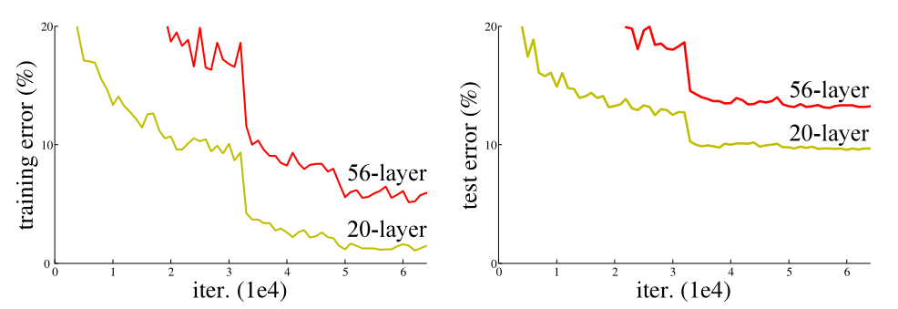
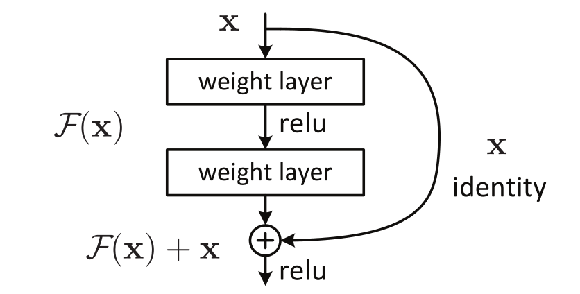
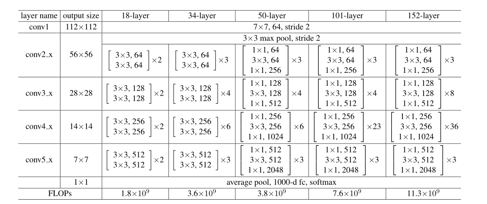
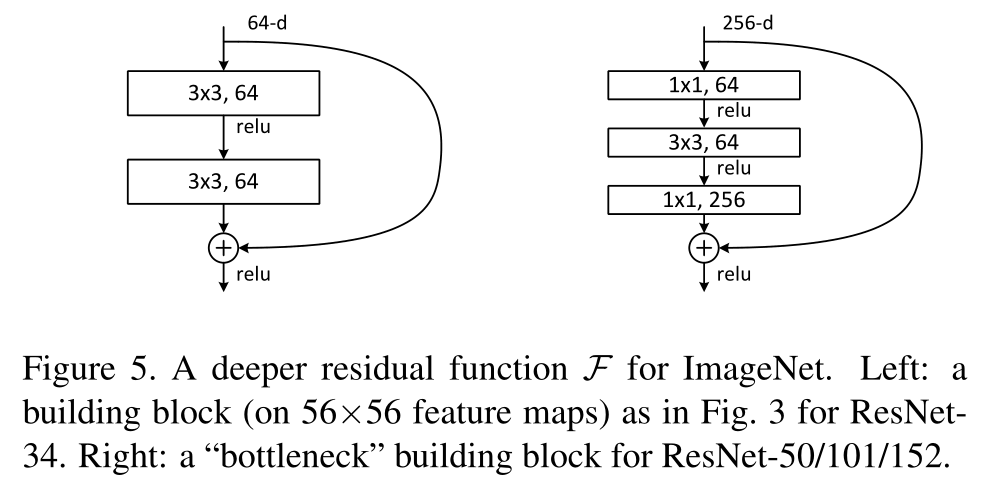

论文阅读：Deep Residual Learning for Image Recognition
Motivation
深度神经网络以端到端的多层网络方式整合低/中/高级别特征。在一个深层次的卷积网络中，每一层学到的特征不尽相同且越深的部分学到的feature越细节。网络的深度对于模型表现至关重要。
但是随着网络加深，会有以下几个问题：
- 梯度消失/爆炸
- 过拟合
- 模型退化
前两个比较好理解，对于梯度消失/爆炸，网络更新是通过梯度的BP，也就是通过链式求导一个一个乘上去，如果里面都小于1，很多项之后就会趋于0，反之也好理解(当然这只是一种情况)。这个问题随着 normalized 初始化和 中间 normalization 层的引入，很大程度上被解决了。
对于第二个过拟合，就是网络层数增多之后，网络会变复杂，参数变多，如果数据量不能和这个匹配上就会出现过拟合，也就是说在训练集上过度学习和拟合，在测试集上缺少泛化能力。
第三个这里要着重讲一下，退化 ，情况如下图所示。
可以看到随着层数的增加，不仅test上的loss增加，train上的也增加，这就是degradation现象，区别于过拟合。
所以，作者提出了残差结构，如下图所示：
最初我们要拟合的是一个潜在映射 $\mathcal{H}(\textbf{x})$，现在我们堆叠的非线性层拟合另外一个映射 $\mathcal{F}(\textbf{x})=\mathcal{H}(\textbf{x})-\textbf{x}$，所以原来我们要拟合的映射也就是 $\mathcal{F}(\textbf{x})+\textbf{x}$。
假设这个映射比原映射更容易优化，极端地说：如果 identity map 是最佳情况的话，那么把残差块优化到一个全0映射更加简单。
To the extreme, if an identity mapping were optimal, it would be easier to push the residual to zero than to fit an identity mapping by a stack of nonlinear layers.
Deep Residual Learning
Residual learning
如果假设多个非线性层能够渐进一个复杂函数，那么多个非线性层也能渐进残差函数 $\mathcal{H}(\textbf{x})-\textbf{x}$。
所以残差学习部分由学习函数 $\mathcal{H}(\textbf{x})$ 转化为学习 $\mathcal{H}(\textbf{x})-\textbf{x}$，新的函数比较容易学习，原因有以下几点：
- 如果一致性映射 (Identity Mapping) 是最优的，那么 $\mathcal{F}(\textbf{x})\approx0$，更好拟合。
- 改为残差学习的方式后，原本的映射会对输出的变化更加敏感。
- 求导可以发现，梯度是 $\mathcal{F}’(\textbf{x})+1$，这部分几乎不会一直为0，所以梯度更新更顺畅。
Identity Mapping by Shortcuts
$$
\textbf{y}=\mathcal{F}(\textbf{x},{W_i})+\textbf{x}
$$
$\mathcal{F}(\textbf{x},{W_i})$ 是学习的残差映射。
这里需要注意的就是，后面加上的shortcut前面可以也加上对应的权重，也就是下面的形式：
$$
\textbf{y}=\mathcal{F}(\textbf{x},{W_i})+W_s\textbf{x}
$$
但是经过实验，加上权重并不能让结果变好，因此，就算加权重，也是为了dimensions上的一致性。
网络结构
进一步优化
为了减少实际运算的时间成本，作者将原来的残差学习结构改为瓶颈结构(bottleneck)，如下图。
通过在首尾使用1x1 conv来巧妙地缩减或扩张feature map维度，得我们的3x3 conv的filters数目不受外界即上一层输入的影响，自然它的输出也不会影响到下一层module。
这两种结构的时间复杂度相似。此时投影法映射带来的参数成为不可忽略的部分（因为输入维度的增大），所以要使用zero padding的恒等映射。bottleneck替换原本ResNet的残差学习结构buliding block，网络深度得以增加。